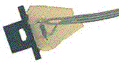

Light Sensor
(analog)
Infrared "Top Hat" Reflectance Sensor
(analog)

Infrared "E.T." Distance Sensor
(high-impedance analog)

Touch Sensors
(digital)

Infrared "Break Beam" Sensor
(digital)

Sonar
(Ultrasonic Rangefinder)
KIPR's Instructional Software System-C (KISS-C for short) is a development environment for the C language consisting of an editor, a compiler and a set of libraries and simulator for the CBC Botball Controller. KISS-C implements the full ANSI C specification. For information about the C programing language, including history and basic syntax, see the Wikipedia article C (programming language).
The primary purpose of this manual is to describe the CBC Botball Controller libraries and simulator, which are extensions to the C programming language. This file also provides a basic introduction to programming in C. To learn more about programming in C, consult one of the many books or websites that provide C references and tutorials.
Both new (unsaved) and saved files can be opened for editing in KISS-C. A row of tabs lists the files that have been opened. Clicking a file's tab activates it for editing.
The File menu has standard entries for New, Open, Save, Save As, Print, Close and Exit.
To simulate the active file, simply click the Simulate button. The active file will also be saved, unless it is new, in which case the user is prompted for a "save as" file name. The active file must contain or #include the main function, in order to be simulated.
To download the active file, click on the Download button. If the serial port connecting the CBC to your pc has not already been specified, a dialog will appear to set it.
The interface provides additional capabilities for program entry/edit, minor adjustment to the display (font size), auto-completion and auto-indentation. If there is a syntax error in the program, an error window will appear at the bottom of the KISS C screen with the error message and the file and line number where the error was detected. If the error occurred in the active file, then clicking on the error message will move to that line. The edit menu provides a Go to line option.
C programs are automatically formatted and indented. Keywords, comments, and text strings are highlighted with color unless this feature is turned off. Most CBC-specific library functions will have pop-help when they are entered into the input window.
KISS-C does parenthesis-balance-highlighting when the cursor is placed to the right of any right parenthesis, bracket, or brace.
A Quick C Tutorial Index
Most C programs consist of function definitions and data structures. Here is a simple C program that defines a single function, called main.
/* Simple exampleThe expression
C Programmer's Manual */ int main()
{
printf("Hello, world!\n"); // Something simple }
|
All functions must have a return type. While main does not return a value to another function, it does return an integer to the operating system, and so is of type int. Other types include no return value (void) and floating point numbers (float). This function declaration information must precede each function definition.
Immediately following the function declaration is the function's name (in this case, main). Next, in parentheses, are any arguments (or inputs) to the function. main has none, but an empty set of parentheses is still required.
After the function arguments is an open curly-brace {. This signifies the start of the actual function code. Curly-braces signify program blocks, or chunks of code.
Next comes a series of C statements. Statements demand that some action be taken. Our demonstration program has a single statement, a printf (formatted print). This will print the message "Hello, world!" to the LCD display. The \n indicates end-of-line. The printf statement ends with a semicolon (;). All C statements must be ended by a semicolon. Beginning C programmers commonly make the error of omitting the semicolon that is required to end each statement.
The main function is ended by the close curly-brace }.
Let's look at an another example to learn some more features of C. The following code defines the function square, which returns the mathematical square of a number.
int square(int n)The function is declared as type int, which means that it will return an integer value.
{
return(n * n);
}
Next comes the function named square, followed by its argument list in parentheses. square has one argument, n, which is an integer. Notice how declaring the type of the argument is done similarly to declaring the type of the function.
When a function has arguments declared, those argument variables are valid within the "scope" of the function (i.e., they only have meaning within the function's own code). Other functions may use the same variable names independently.
The code for square is contained within the set of curly braces. In fact, it consists of a single statement: the return statement. The return statement exits the function and returns the value of the C expression that follows it (in this case "n * n").
Except where grouped by parentheses, expressions are evaluated according to a set of precedence rules associated with the various operations within the expression. In this case, there is only one operation (multiplication), signified by the "*", so precedence is not an issue.
Let's look at an example of a function that performs a function call to the square program.
float hypotenuse(int a, int b)This code demonstrates several more features of C. First, notice that the floating point variable h is defined at the beginning of the hypotenuse function. In general, whenever a new program block (indicated by a set of curly braces) is begun, new local variables may be defined.
{
float h;
h = sqrt((float)(square(a) + square(b)));
return(h);
}
The value of h is set to the result of a call to the sqrt function. It turns out that sqrt is a built-in KISS-C function that takes a floating point number as its argument.
We want to use the square function we defined earlier, which returns its result as an integer. But the sqrt function requires a floating point argument. We get around this type incompatibility by coercing the integer sum (square(a) + square(b)) into a float by preceding it with the desired type, in parentheses. Thus, the integer sum is made into a floating point number and passed along to sqrt.
The hypotenuse function finishes by returning the value of h.
Note that the functions square and hypotenuse are functions, not a program. If they are in the same file as the main function written above, they will never be called. If main was modified to be:
/* Simple example
C Programmer's Manual */ int main()
{
printf("Hypotenuse of 3,4 is %d\n",hypotenuse(3,4)); // call a function }
then the program (which always starts execution with main) would calculate and print out the hypotenuse of a triangle with side lengths of 3 & 4. However, C requires that functions bedefined before they are first called. Since hypotenuse is called in main, either the functions need to be defined earlier in the file, or they can be prototyped at the begining of the file. A prototype of a C function is simply a C statement that includes the return type, function name and types of the parameters. For example the prototypes of the functions square and hypotenuse would be:
int square(int n);
float hypotenuse(int a, int b);
The order in which function protypes appear does not matter as long as they come before the definitions that call that function.
This concludes the brief C tutorial.
Data Objects Index
Variables and constants are the basic data objects in a C program. Declarations list the variables to be used, state what type they are, and may set their initial value.
Variables Index
Variable names are case-sensitive. The underscore character is allowed and is often used to enhance the readability of long variable names. C keywords like if, while, etc. may not be used as variable names.
Functions and global variables may not have the same name. In addition, if a local variable is named the same as a function or a global variable, the local use takes precedence; ie., use of the function or global variable is prevented within the scope of the local variable.
In C, variables can be declared at the top level (outside of any curly braces) or at the start of each block (a functional unit of code surrounded by curly braces). In general, a variable declaration is of the form:
|
Local and Global Scopes Index
If a variable is declared within a function, or as an argument to a function, its binding is local, meaning that the variable has existence only within that function definition. If a variable is declared outside of a function, it is a global variable. It is defined for all functions, including functions which are defined in files other than the one in which the global variable was declared.
Variable Initialization Index
Local and global variables can be initialized to a value when they are declared. If no initialization value is given, their value is indeterminate.
All global variable declarations must be initialized to constant values. Local variables may be initialized to the value of arbitrary expressions including any global variables, function calls, function arguments, or local variables which have already been initialized.
Here is a small example of how initialized declarations are used.
int i=50; /* declare i as global integer; initial value 50 */ float j=100.123; /* declare j as global float; initial value 100.123 */ int foo()Local variables are initialized whenever the function containing them is executed. Global variables are initialized whenever a reset condition occurs. Reset conditions occur when:
{
int x; /* declare x as local integer; initial value 0 */ float y=j; /* declare y as local float; initial value j */ }
|
Constants Index
Integers constants may be defined in decimal integer format (e.g., 4053 or -1) or hexadecimal format using the "0x" prefix (e.g., 0x1fffffff).
Floating Point Constants Index
Floating point numbers may use exponential notation (e.g., "10e3" or "10E3") or may contain a decimal period. For example, the floating point zero can be given as "0.", "0.0", or "0E1", but not as just "0". Since the board has no floating point hardware, floating point operations are much slower than integer operations, and should be used sparingly.
Characters and String Constants Index
Quoted characters return their ASCII value (e.g., 'x').
Character string constants are defined with quotation marks, e.g., "This is a character string.".
NULL Index
The special constant NULL has the value of zero and can be assigned to and compared to pointer or array variables (which will be described in later sections). In general, you cannot convert other constants to be of a pointer type, so there are many times when NULL can be useful.
For example, in order to check if a pointer has been initialized you could compare its value to NULL and not try to access its contents if it was NULL. Also, if you had a defined a linked list type consisting of a value and a pointer to the next element, you could look for the end of the list by comparing the next pointer to NULL.
KISS-C supports the following data types:
32-bit integers are signified by the type indicator int. They are signed integers, and may be valued from -2,147,483,648 to +2,147,483,647 decimal.
32-bit Floating Point Numbers Index
Floating point numbers are signified by the type indicator float. They have approximately seven decimal digits of precision and are valued from about 10^-38 to 10^38.
8-bit Characters Index
Characters are an 8-bit number signified by the type indicator char. A character's value typically represents a printable symbol using the standard ASCII character code, but this is not necessary; characters can be used to refer to arbitrary 8-bit numbers.
Pointers Index KISS-C pointers are 32-bit numbers which represent locations in memory. Values in memory can be manipulated by calculating, passing and dereferencing pointers representing the location where the information is stored.
Arrays Index Arrays are used to store homogenous lists of data (meaning that all the elements of an array have the same type). Every array has a length which is determined at the time the array is declared. The data stored in the elements of an array can be set and retrieved in the same manner as for other variables.
Structures Index
Structures are used to store non-homogenous but related sets of data. Elements of a structure are referenced by name instead of number and may be of any supported type.
Structures are useful for organizing related data into a coherent format, reducing the number of arguments passed to functions, increasing the effective number of values which can be returned by functions, and creating complex data representations such as directed graphs and linked lists.
The address where a value is stored in memory is known as the pointer to that value. It is often useful to deal with pointers to objects, but great care must be taken to insure that the pointers used at any point in your code really do point to valid objects in memory.
For additional information on programming with C pointers, please refer to a C programming book or website.
Arrays Index
KISS-C supports arrays of characters, integers, floating-point numbers, structures, pointers, and array pointers (multi-dimensional arrays). The main reasons that arrays are useful are that they allow you to allocate space for many instances of a given type, send an arbitrary number of values to functions, and provide the means for iterating over a set of values.
Declaring and Initializing Arrays Index
Arrays are declared using square brackets. The following statement declares an array of ten integers:
int foo[10];In this array, elements are numbered from 0 to 9. Elements are accessed by enclosing the index number within square brackets: foo[4] denotes the fifth element of the array foo (since counting begins at zero).
Arrays not initialized at declaration contain indeterminate values. Arrays may be initialized at declaration by specifying the array elements, separated by commas, within curly braces. If no size value is specified within the square brackets when the array is declared but initialization information is given, the size of the array is determined by the number of elements given in the declaration. For example,
int foo[]= {0, 4, 5, -8, 17, 301};
creates an array of six integers, with foo[0] equaling 0,
foo[1] equaling 4, etc.
If a size is specified and initialization data is given, the length of the initialization data may not exceed the specified length of the array or an error results. If, on the other hand, you specify the size and provide fewer initialization elements than the total length of the array, the remaining elements contain indeterminate values.
Character arrays are typically text strings. There is a special syntax for initializing arrays of characters. The character values of the array are enclosed in quotation marks:
char string[]= "Hello there";This form creates a character array called string with the ASCII values of the specified characters. In addition, the character array is terminated by a zero. Because of this zero-termination, the character array can be treated as a string for purposes of printing (for example). Character arrays can be initialized using the curly braces syntax, but they will not be automatically null-terminated in that case. In general, printing of character arrays that are not null-terminated will cause problems.
Passing Arrays as Arguments Index
When an array is passed to a function as an argument, the array's pointer is actually passed, rather than the elements of the array. If the function modifies the array values, the array will be modified, since there is only one copy of the array in memory.
There are two ways of declaring an array argument: as an array or as a pointer to the type of the array's elements.
As an example, the following function takes an index and an array, and returns the array element specified by the index:
int retrieve_element(int index, int array[])Notice the use of the square brackets to declare the argument array as a pointer to an array of integers.
{
return array[index];
}
When passing an array variable to a function, you are actually passing the value of the array pointer itself and not one of its elements, so no square brackets are used.
void foo()Multi-dimensional Arrays Index
{
int array[10];
retrieve_element(3, array);
}
A two-dimensional array is just like a single dimensional array whose elements are one-dimensional arrays. Declaration of a two-dimensional array is as follows:
int k[2][3];The number in the first set of brackets is the number of 1-D arrays of int. The number in the second set of brackets is the length of each of the 1-D arrays of int. In this example, k is an array containing two 1-D arrays; k[0] is a 1-D array of int of length 3; k[0][1] is an int. Arrays of with any number of dimensions can be generalized from this example by adding more brackets in the declaration.
Structures are used to store non-homogenous but related sets of data. Elements of a structure are referenced by name instead of number and may be of any supported type. Structures are useful for organizing related data into a coherent format, reducing the number of arguments passed to functions, increasing the effective number of values which can be returned by functions, and creating complex data representations such as directed graphs and linked lists.
The following example shows how to define a structure, declare a variable of structure type, and access its elements.
struct fooThe first part is the structure definition. It consists of the keyword struct, followed by the name of the structure (which can be any valid identifier), followed by a list of named elements in curly braces. This definition specifies the structure of the type struct foo. Once there is a definition of this form, you can use the type struct foo just like any other type. The line
{
int i;
int j;
};
struct foo f1;
void set_f1(int i,int j)
{
f1.i=i;
f1.j=j;
}
void get_f1(int *i,int *j)
{
*i=f1.i;
*j=f1.j;
}
struct foo f1;is a global variable declaration which declares the variable f1 to be of type struct foo.
The dot operator is used to access the elements of a variable of structure type. In this case, f1.i and f1.j refer to the two elements of f1. You can treat the quantities f1.i and f1.j just as you would treat any variables of type int (the type of the elements was defined in the structure declaration at the top to be int).
Pointers to structure types can also be used, just like pointers to any other type. However, with structures, there is a special short-cut for referring to the elements of the structure pointed to.
struct foo *fptr;In this example, fptr is declared to be a pointer to type struct foo. In main, it is set to point to the global f1 defined above. Then the elements of the structure pointed to by fptr (in this case these are the same as the elements of f1), are set. The arrow operator is used instead of the dot operator because fptr is a pointer to a variable of type struct foo. Note that (*fptr).i would have worked just as well as fptr->i, but it would have been clumsier.
void main()
{
fptr=&f1;
fptr->i=10;
fptr->j=20;
}
Note that only pointers to structures, not the structures themselves, can be passed to or returned from functions.
Complex Initialization examples Index
Complex types -- arrays and structures -- may be initialized upon declaration with a sequence of constant values contained within curly braces and separated by commas.
Arrays of character may also be initialized with a quoted string of characters.
For initialized declarations of single dimensional arrays, the length can be left blank and a suitable length based on the initialization data will be assigned to it. Multi-dimensional arrays must have the size of all dimensions specified when the array is declared. If a length is specified, the initialization data may not overflow that length in any dimension or an error will result. However, the initialization data may be shorter than the specified size and the remaining entries will be initialized to 0.
Following is an example of legal global and local variable initializations:
/* declare many globals of various types */ int i=50;Statements and Expressions Index
int *ptr=NULL;
float farr[3]={ 1.2, 3.6, 7.4 };
int tarr[2][4]={ { 1, 2, 3, 4 }, { 2, 4, 6, 8} };
char c[]="Hi there how are you?";
char carr[5][10]={"Hi","there","how","are","you"};
struct bar
{
int i;
int *p;
float j;
} b={5, NULL, 10.5};
struct bar barr[2] = { { 1, NULL, 2.5 }, { 3 } };
/* declare locals of various types */
int foo()
{
int x; /* local variable x with initial value 0 */ int y= tarr[0][2]; /* local variable y with initial value 3 */ int *iptr=&i; /* local pointer to integer
which points to the global i */ int larr[2]={10,20}; /* local array larr
with elements 10 and 20 */ struct bar lb={5,NULL,10.5}; /* local variable of type
struct bar with i=5 and j=10.5 */ char lc[]=carr[2]; /* local string lc with
initial value "how" */ ... }
Operators act upon objects of a certain type or types and specify what is to be done to them. Expressions combine variables and constants to create new values. Statements are expressions, assignments, function calls, or control flow statements which make up C programs.
Operators Index
Each of the data types has its own set of operators that determine which operations may be performed on them.
Integer Operations Index
The following operations are supported on integers:
Floating Point Numbers Index
KISS-C uses a package of floatingpoint routines. This package includes arithmetic, trigonometric, and logarithmic functions. Since floating point operations are implemented in software, they are much slower than the integer operations; we recommend against using floating point if you are concerned about performance.
The following operations are supported on floating point numbers:
|
Characters are only allowed in character arrays. When a cell of the array is referenced, it is automatically coerced into a integer representation for manipulation by the integer operations. When a value is stored into a character array, it is coerced from a standard 16- bit integer into an 8-bit character (by truncating the upper eight bits).
Assignment Operators and Expressions Index
The basic assignment operator is =. The following statement adds 2 to the value of a.
a = a + 2;The abbreviated form
a += 2;could also be used to perform the same operation. All of the following binary operators can be used in this fashion:
+ - * / % << >> & ^ |Increment and Decrement Operators Index
The increment operator "++" increments the named variable. For example, the construction "a++" is equivalent to "a= a+1" or "a+= 1". A statement that uses an increment operator has a value. For example, the statement
a= 3; printf("a=%d a+1=%d\n", a, ++a);
will display the text "a=3 a+1=4".
If the increment operator comes after the named variable, then the
value of the statement
is calculated after the increment occurs. So the statement
a= 3; printf("a=%d a+1=%d\n", a, a++);
would display "a=3 a+1=3" but would finish
with a set to 4.
The decrement operator "--" is used in the
same fashion as the increment operator.
Data Access Operators Index
&
|
|
|
|
|
Precedence and Order of Evaluation Index
The following table summarizes the rules for precedence and associativity for the C operators. Operators listed earlier in the table have higher precedence; operators on the same line of the table have equal precedence.
|
Control Flow Index
KISS-C supports all of the standard C control structures.
Statements and Blocks Index
A single C statement is ended by a semicolon. A series of statements may be grouped together into a block using curly braces. Inside a block, local variables may be defined. Blocks may be used in place of statements in the control flow constructs.
If-Else Index
The if else statement is used to make decisions. The syntax is:
if (<expression>)<expression> is evaluated; if it is not equal to zero (e.g., logic true), then <statement-1> is executed.
<statement-1>
else <statement-2>
The else clause is optional. If the if part of the statement did not execute, and the else is present, then <statement-2> executes.
While Index
The syntax of a while loop is the following:
while (<expression>)while begins by evaluating <expression>. If it is false, then <statement> is skipped. If it is true, then <statement> is evaluated. Then the expression is evaluated again, and the same check is performed. The loop exits when <expression> becomes zero.
<statement>
One can easily create an infinite loop in C using the while statement:
while (1)
<statement>
Do-While Index
The syntax of a do-while loop is the following:
do
<statement>
while (<expression>);
The equivalent while loop would be the following:
<statement>
while (<expression>)
<statement>
For Index
The syntax of a for loop is the following:
for (<expr-1>;<expr-2>;<expr-3>)The for construct is equivalent to the following construct using while:
<statement>
<expr-1>;Typically, <expr-1> is an assignment, <expr-2> is a relational expression, and <expr-3> is an increment or decrement of some manner. For example, the following code counts from 0 to 99, printing each number along the way:
while (<expr-2>)
{
<statement>
<expr-3>;
}
int i;
for (i = 0; i < 100; i++)
printf("%d\n", i);
Switch Index
The syntax of a switch block is as follows:
switch (int)
{
case const1:
<statement list1>
break;
case const2:
<statement list2>
break;
default:
<statement list3>
}
The switch construct takes an integer variable as input, and compares it to each case listed. The first matching const is selected, and
execution begins there. The break is optional, and if no break is found then execution
continues through each following statement. Also note that each case has a
list of single statements, as opposed to a block enclosed in curly braces.
Here's an example of how a switch might be used:
int i = 1;
switch(i)
{
case 0:
printf("Case 0\n");
break;
case 1:
printf("Case 1\n");
break;
default:
printf("Default\n");
}
Since i is equal to 1, the text "Case 1" will be printed to the screen. If i were equal to 0, "Case 0" would be printed. If i were any number besides 0 or 1, "Default" would be printed.
Break IndexUse of the break statement provides an early exit from a while, do-while or for loop. The break statement can also provide an exit from a switch block.
LCD Screen Printing Index
KISS-C has a version of the C function printf for formatted printing to the LCD screen. KISS-C Also has a CBC specific print command, cbc_printf, that allows limited cursor control.
The syntax of printf is the following:
printf(<format-string>, <arg-1> , ... , <arg-N>);This is best illustrated by some examples.
Printing Examples Index
Example 1: Printing a message PM Index
The following statement prints a text string to the screen.
printf("Hello, world!\n");
|
Example 2: Printing a number Index
The following statement prints the value of the integer variable x with a brief message.
printf("Value is %d\n", x);
|
Example 3: Printing a number in binary Index
The following statement prints the value of the integer variable x as a binary number.
printf("Value is %b\n", x);
|
Example 4: Printing a floating point number Index
The following statement prints the value of the floating point variable n as a floating point number.
printf("Value is %f\n", n);
|
Example 5: Printing two numbers in hexadecimal format Index
printf("A=%x B=%x\n", a, b);
|
Example 6: Printing using cbc_printf Index
cbc_printf(0,2,"A=%d B=%d", a, b); |
Formatting Command Summary Index
|
Preprocessor Index
The preprocessor processes a file before it is sent to the compiler. The KISS-C preprocessor allows definition of macros, and conditional compilation of sections of code. Using preprocessor macros for constants and function macros can make KISS-C code more efficient as well as easier to read. Using #if to conditionally compile code can be very useful, for instance, for debugging purposes.
The special preprocessor command #include has been included to allow programs to cause a program to download to initiate the download of stored programs that are not in the KISS-C library. For example, suppose you have a set of stored programs in a file named "mylib.ic", some of which you need for your current program to work.
/* load my library */ #include "mylib.ic" void main()Preprocessor Macros Index
{
char s[32] = "text string wrapping badly\n";
fix (s); /* apply my fix function to s and print it */ printf(s);
}
Preprocessor macros are defined by using the #define preprocessor directive at the start of a line. A macro is local to the file in which it is defined. The following example shows how to define preprocessor macros.
#define RIGHT_MOTOR 0Preprocessor macro definitions start with the #define directive at the start of a line, and continue to the end of the line. After #define is the name of the macro, such as RIGHT_MOTOR. If there is a parenthesis directly after the name of the macro, such as the GO_RIGHT macro has above, then the macro has arguments. The GO_RIGHT and GO_LEFT macros each take one argument. The GO macro takes two arguments. After the name and the optional argument list is the body of the macro.
#define LEFT_MOTOR 1
#define GO_RIGHT(power) (motor(RIGHT_MOTOR,(power)))
#define GO_LEFT(power) (motor(LEFT_MOTOR,(power)))
#define GO(left,right) {GO_LEFT(left); GO_RIGHT(right);}
void main()
{
GO(0,0);
}
Each time a macro is invoked, it is replaced with its body. If the macro has arguments, then each place the argument appears in the body is replaced with the actual argument provided.
Invocations of macros without arguments look like global variable references. Invocations of macros with arguments look like calls to functions. To an extent, this is how they act. However, macro replacement happens before compilation, whereas global references and function calls happen at run time. Also, function calls evaluate their arguments before they are called, whereas macros simply perform text replacement. For example, if the actual argument given to a macro contains a function call, and the macro instantiates its argument more than once in its body, then the function would be called multiple times, whereas it would only be called once if it were being passed as a function argument instead.
Appropriate use of macros can make KISS-C programs and easier to read. It allows constants to be given symbolic names without requiring storage and access time as a global would. It also allows macros with arguments to be used in cases when a function call is desirable for abstraction, without the performance penalty of calling a function.
Conditional compilation Index
It is sometimes desirable to conditionally compile code. The primary example of this is that you may want to perform debugging output sometimes, and disable it at other times. The KISS-C preprocessor provides a convenient way of doing this by using the #ifdef directive.
void go_left(int power)In this example, when the macro DEBUG is defined, the debugging message "Going Left" will be printed and the board will beep each time go_left is called. If the macro is not defined, the message and beep will not happen. Each #ifdef must be follwed by an #endif at the end of the code which is being conditionally compiled. The macro to be checked can be anything, and #ifdef blocks may be nested.
{
GO_LEFT(power);
#ifdef DEBUG
printf("Going Left\n");
beep();
#endif }
Unlike regular C preprocessors, macros cannot be conditionally defined. If a macro definition occurs inside an #ifdef block, it will be defined regardless of whether the #ifdef evaluates to true or false. The compiler will generate a warning if macro definitions occur within an #ifdef block.
The #if, #else, and #elif directives are also available, but are outside the scope of this document. Refer to a C reference manual for how to use them.
The CBC Library File Index
Library files provide standard C functions for interfacing with hardware on the robot controller board. These functions are written either in C or as assembly language drivers. Library files provide functions to do things like control motors, make tones, and input sensors values.
KISS-C automatically loads the library file every time it is invoked.
For convenience, a description of some of the more commonly used library functions follows.
Commonly Used CBC Library Functions Index
digital(<port#>);Processes Index
/* returns 0 if the switch attached to the port is open and
returns 1 if the switch is closed. Digital ports are numbered
0-7. Typically used for bumpers or limit switches. */ analog(<port#>);
/* returns the analog value of the port (a value in the range 0-255).
Analog ports are numbered 8-15. Light sensors and range sensors are
examples of sensors you would use in analog ports. */ sleep(<float_secs>);
/* waits specified number of seconds */ beep();
/* causes a beep sound */ tone(<int_frequency>, <int_secs>)
/* plays at specified frequency for specified time (seconds) */ printf(<string>, <arg1>, <arg2>, ... );
/* prints <string>. If the string contains % codes then the <args>
after the string will be printed in place of the % codes in the
format specified by the code. %d prints a decimal number. %f
prints a floating point number. %c prints a character, %b prints
an integer in binary, %x prints an integer in hexadecimal. */ motor(<motor_#>, <speed>)
/* controls the motors. <motor_#> is an integer between 0 and 3.
<speed> is an integer between -100 and 100 where 0
means the motor is off and negative numbers run the motor in the
reverse direction */ fd(<motor_#>);
/* turns on the motor specified (direction is determined by plug
orientation */ bk(<motor_#>);
/* turns on the motor specified in the opposite direction from fd */ off(<motor_#>);
/* turns off the motor specified */ ao();
/* turns all motor ports off */
Processes work in parallel. Each process, once it is started, will
continue until it finishes
or until it is killed by another process using the
Processes can communicate with one another by reading and modifying global variables. The globals can be used as semaphores so that one process can signal another. Process IDs may also be stored in globals so that one process can kill another when needed.
The library functions for controlling processes are:
start_process(<function_name>);
/* start_process returns an integer that is the <process_id>
and starts the function <function_name> as a separate
process */ defer();
/* when placed in a function that is used as a process this
will cause that process to give up the remainder of its time
slice whenever defer is called */ kill_process(<process_id>);
/* this will terminate the process specified by the
<process_id> */
Sensors
| Light Sensor (analog) |
 Infrared "Top Hat" Reflectance Sensor (analog) |
Infrared "E.T." Distance Sensor (high-impedance analog) |
|
Touch Sensors (digital) |
Infrared "Break Beam" Sensor (digital) |
|
| Sonar (Ultrasonic Rangefinder) |
||
Infrared "Top Hat" Reflectance Sensor (analog)
Infrared "E.T." Distance Sensor (high-impedance analog)

Infrared "Break Beam" Sensor (digital)

Sonar (Ultrasonic Rangefinder)

CBC Library Function Descriptions
(alphabetic
order)
a_button
[Category: Sensors]
Reads the value (0 or 1) of the A button.
alloff
[Category: Motors]
Turns off all motors. ao is
a short form for alloff.
analog
[Category: Sensors]
Returns the value of the sensor installed at the port numbered p. The
result is an integer between 0 and 255. The function can be used with
analog ports 8 through 15. Ports 13 through 15 are
floating (used for sensors such as an optical range finder). Since ports 13-15 are
floating, the value cannot be predicted without a sensor inserted.
analog10
[Category: Sensors]
10-bit version of the analog
function. The returned value is in the range 0 to 1023 rather than 0 to
255.
ao
[Category: Motors]
Turns off all motors.
atan
[Category: Math]
Returns the arc tangent of the angle. Angle is specified in radians;
the result is in radians.
b_button
[Category: Sensors]
Reads the value (0 or 1) of the B button.
beep
[Category: Sound]
Produces a tone. Returns when
the tone is finished.
bk
[Category: Motors]
Turns motor m on full speed in the
backward direction.
Example:
bk(1);
black_button
[Category: Sensors]
Reads the value (0 or 1) of the Black button on the CBC (or a period on the simulator).
block_motor_done
[Category: Motors]
Function does not return until specified motor completes any executing
speed or position control moves.
Example:
mrp(0,500,20000L);
block_motor_done(1);
bmd
[Category: Motors]
Function does not return until specified motor completes any executing
speed or position control moves.
Example:
mrp(0,500,20000L);
bmd(1);
cbc_display_clear
[Category: Output]
Clear the CBC display.
cbc_printf
[Category: Output]
Perform a standard printf starting at screen location col, row.
clear_motor_position_counter
[Category: Motors]
Reset the position counter for the motor specified to 0.
cos
[Category: Math]
Returns cosine of angle. Angle is specified in radians; result is in
radians.
defer
[Category: Processes]
Makes a process swap out immediately after the function is called.
Useful if a process knows that it will not need to do any work until
the next time around the scheduler loop. defer() is implemented as a C built-in
function.
digital
[Category: Sensors]
Returns the value of the sensor in sensor port p, as a true/false value
(1 for true and 0 for false). Sensors are expected to be active low,
meaning that they are valued at zero volts in the active, or true,
state. Thus the library function returns the inverse of the actual
reading from the digital hardware: if the reading is zero volts or
logic zero, the digital()
function will return true. Valid for digital ports 0-7.
disable_servos
[Category: Motors]
Disables the servo motor ports (powers down all servo motors).
down_button
[Category: Sensors]
Reads the value (0 or 1) of the move down button.
enable_servos
[Category: Sensors]
Enables all servo motor ports.
exp10
[Category: Math]
Returns 10 to the num power.
exp
[Category: Math]
Returns e to the num power.
fd
[Category: Motors]
Turns motor m on full in the forward direction.
Example:
fd(3);
freeze
[Category: Motors]
Freezes motor m (prevents continued motor rotation, in contrast to off, which allows the motor to
"coast").
get_motor_done
[Category: Motors]
Returns whether the motor has finished a move with specified position.
get_motor_position_counter
[Category: Motors]
Returns the current motor position value for motor m
(a value which is continually being updated for each motor using back
EMF; a typical discrimination for a given motor is on the order of 1100
position "ticks" per rotation)
get_servo_position
[Category: Motors]
Returns the position value of the servo in port srv.
The value is in the range 0 to 2047. There are 4 servo ports (1, 2,
3, 4).
kill_process
[Category: Processes]
The kill_process function
is used to destroy processes. Processes are destroyed by passing their
process ID number to kill_process.
If the return value is 0, then the process was destroyed. If the return
value is 1, then the process was not found. The following code shows
the main process creating a check_sensor
process, and then destroying it one second later:
int main() {
int pid;
pid=start_process(check_sensor);
sleep(1.0);
kill_process(pid);
}
kissSim_init
[Category: Simulator]
Initiates the graphics CBC/Create simulator with the robot in the specified world, at the initial x and y position and at a heading of theta radians.
kissSimEnablePause
[Category: Simulator]
Will pause the simulation if the space bar is pressed when this is called.
kissSimPause
[Category: Simulator]
Will pause the simulation when this is called. Press the space bar to resume.
left_button
[Category: Sensors]
Reads the value (0 or 1) of the move left button.
log10
[Category: Math]
Returns the logarithm of num to the base
10.
log
[Category: Math]
Returns the natural logarithm of num.
mav
[Category: Motors]
This function is the same as move_at_velocity
motor
[Category: Motors]
Turns on motor m at scaled PWM duty cycle
percentage p. Power levels range
from 100 for full on forward to -100 for full on backward.
move_at_velocity
[Category: Motors]
Moves motor m at velocity vel indefinitely. The velocity range is -1000 to
1000 ticks per second.
move_relative_position
[Category: Motors]
Moves motor m at velocity vel from its current position curr_pos to curr_pos + pos.
The speed range is 0 to 1000 ticks per second. Example:
move_relative_position(1,275,-1100L);
move_to_position
[Category: Motors]
Moves motor m at velocity vel from its current position curr_pos to pos.
The speed range is 0 to 1000. Note that if the motor is already at pos, the motor doesn't move.
mrp
[Category: Motors]
This function is the same as move_relative_position.
mtp
[Category: Motors]
This function is the same as move_to_position.
msleep
[Category: Time]
Waits for an amount of time equal to or greater than msec milliseconds.
Example:
/*
wait for 1.5 seconds */ msleep(1500);
off
[Category: Motors]
Turns off motor m.
Example:
off(1);
power_level
[Category: System]
Returns the current power level in volts.
printf
[Category: Output]
Prints the contents of the string referenced by s to the cursor position on the screen.
See the manual above for more details.
r_button
[Category: Sensors]
Reads the value (0 or 1) of the R (shoulder) button.
random
[Category: Math]
Returns a random integer between 0 and some very large number.font>
right_button
[Category: Sensors]
Reads the value (0 or 1) of the move right button.
seconds
[Category: Time]
Returns the count of system time in seconds, as a floating point
number. Resolution is one millisecond.
set_pid_gains
[Category: motor]
This function is used to adjust the weights of the PID control for the motors. The p, i and d parameters are the numerators for the p, i and d coefficients. The pd, id and dd parameters are their respective denominators. Thus all of the parameters are integers, but the actual coefficients can be floats. If a motor is jerky, the p and d terms should be reduced in size. If a motor lags far behind, they should be increased. The default values are 30,0,-30,70,1,51.
set_servo_position
[Category: motor]
Sets the position value of the servo in port srv.
The value of pos must be in the range 0 to
2047. There are 4 servo ports (1, 2, 3, 4).
setpwm
[Category: Motors]
Runs motor m at duty cycle dutycycle (values
-100 to 100)
sin
[Category: Math]
Returns the sine of angle. angle is specified in radians; result is in
radians.
sleep
[Category: Time]
Waits for an amount of time equal to or slightly greater than sec seconds. sec is
a float. Example:
/*
wait for 2 seconds */ sleep(2.0);
sonar
[Category: Sensors]
Returns the approximate distance in mm.
sqrt
[Category: Math]
Returns the square root of num.
start_process
[Category: Processes]
The start_process function
is used to start a process, which then runs in parallel with other
active processes. The system keeps track of each running process by
assigning a process ID number to it. start_process returns the process ID number for
each process it starts. The process runs until it finishes or until it
is terminated by kill_process. The following code shows the main process creating a check_sensor process, and then destroying it one
second later:
int main() {
int pid;
pid=start_process(check_sensor);
sleep(1.0);
kill_process(pid);
}
tan
[Category: Math]
Returns the tangent of angle. angle is specified in radians; result is in
radians.
tone
[Category: Sound]
Produces a tone at pitch frequency
(measured in Hertz) for length seconds.
Returns when the tone is finished. Both frequency and length are floats.
up_button
[Category: Sensors]
Reads the value (0 or 1) of the move up button.
|
gets the number of pixels in the blob |
|
gets the pixel x coordinate of the centroid of the blob |
|
gets the pixel y coordinate of the
blob (note: 0,0 is the upper left; 159,119 is the lower right) |
|
gets the confidence for seeing the blob as a percentage of the blob pixel area/bounding box area (range 0-100, low numbers bad, high numbers good) |
|
gets the pixel x coordinate of the leftmost pixel in the blob |
|
gets the pixel x coordinate of the rightmost pixel in the blob |
|
gets the pixel y coordinate of the topmost pixel in the blob |
|
gets the pixel y coordinate of the bottommost pixel in the blob |
|
gets the pixel x width of the bounding box of the blob. This is equivalent to track_bbox_right - track_bbox_left |
|
gets the pixel y height of the bounding box of the blob. This is equivalent to track_bbox_bottom - track_bbox_top |
|
gets the angle in radians of the major axis of the blob. Zero is horizontal and when the left end is higher than the right end the angle will be positive. The range is -PI/2 to +PI/2. |
|
gets the length in pixels of the major and minor axes of the bounding ellipse |
| int create_connect(); | First step for connecting CBC to Create. Returns 0 if sucessful and a negative number if not. This function puts the Create in the create_safe mode. |
| void create_disconnect() ; | Returns Create to proper state and resets XBC baud rate to KISS-C rate |
| void create_start(); | Puts Create into passive mode (no motors) |
| void create_passive(); | Same as above |
| void create_safe(); | Create will execute all commands, but will disconnect and stop if drop or cliff sensors fire. |
| void create_full() ; | Create will move however you tell it -- even if that is a bad thing. In particular, the Create will not stop and disconnect, even if it is picked up or the cliff sensors fire. |
| void create_spot() ; | Simulates a Roomba doing a spot clean |
| void create_cover(); | Simulates a Roomba covering a room |
| void create_demo(int d) ; | Runs built in demos (see Create OI) |
| void create_cover_dock(); | Create roams around until it sees an IR dock and then attmpts to dock |
| int create_mode(); | Returns the Create's mode (0 off; 1 passive; 2 safe; 3 full). |
| int create_sensor_update(); | Calls all of the sensor functions below, updating all Create global variables |
| int create_wall(); | gc_wall: 1 if wall detected; gc_wall_amt: strength of signal; gc_wall_hb: home base seen or not |
| int create_buttons() ; | updates gc_advance_button, gc_play_button: 1 if pressed 0 if not. |
| int create_bumpdrop(); | updates gc_lbump, gc_rbump, gc_fdrop, gc_ldrop and gc_rdrop |
| int create_cliffs() ; | updates IR cliff detectors from left to right: gc_lcliff, gc_lcliff_amt, gc_lfcliff, gc_lfcliff_amt, gc_rfcliff, gc_rfcliff_amt, gc_rcliff, and gc_rcliff_amt: ending in cliff are 1 if a cliff is detected; ending in _amt gives the strength of signal. |
| int create_angle() ; | updates gc_angle which is an int between 0 and 360, and gc_total_angle which can be of whatever size and sign. Left turns (CCW) are positive and right turns (CW) negative |
| int create_distance(); | updates gc_distance which is the distance in mm traveled by center of robot. Going backwards reduces this number. |
| int create_velocity(); | updates gc_vel, gc_lvel, gc_rvel which are the current velocity of the vehicle and left and right wheels in mm/s |
| int create_read_IR(); | updates gc_IR: 255 means no byte is being received, otherwise it has the code from the remote |
| int create_overcurrents(); | updates gc_overcurrents where 16's bit indicates overcurrent in left wheel; 8's bit in right wheel, 4's bit is LD2, 2's bit is LD0 and 1's bit is LD1. |
| int create_battery_charge(); | updates gc_batt_voltage in mV, gc_current_flow in mA, gc_batt_charge and gc_batt_capacity in mAhr. |
| int create_cargo_bay_inputs(); | updates gc_digital_in 16'bit for pin 15, 8's bit for pin 6, 4's bit for pin 18, 2's bit for pin 5 and 1's bit for pin 17. gc_analog is 10 bit resoltion. |
| void create_stop(); | Stops the drive wheels |
| void create_drive (int speed, int radius); | Drives in an arc (see below for point turns and straight). Speed range for all commands is 20-500mm/s |
| void create_drive_straight (int speed); | Drives straight at speed in mm/s |
| void create_spin_CW (int speed); | spins CW with edge speed of speed in mm/s |
| void create_spin_CCW (int speed); | same as above but different |
| void create_drive_direct(int r_speed, int l_speed); | Specifies individual left and right speeds in mm/s |
| void create_advance_led(int on) ; | Pass 1 to turn on light and 0 to turn it off |
| void create_play_led(int on) ; | Pass 1 to turn on light and 0 to turn it off |
| void create_power_led(int color, int brightness) ; | color 0 is red and 255 green; brightness 0 is off and 255 is full brightness |
| void create_load_song(int num); | Picks a song from gc_song_array[16][33]. Each row is a song. First column of each song is number of notes (max is 16). Remaining columns alternate between pitch and duration. See Create OI for details. |
| void create_play_song(int num); | Plays any of the songs that have been loaded |